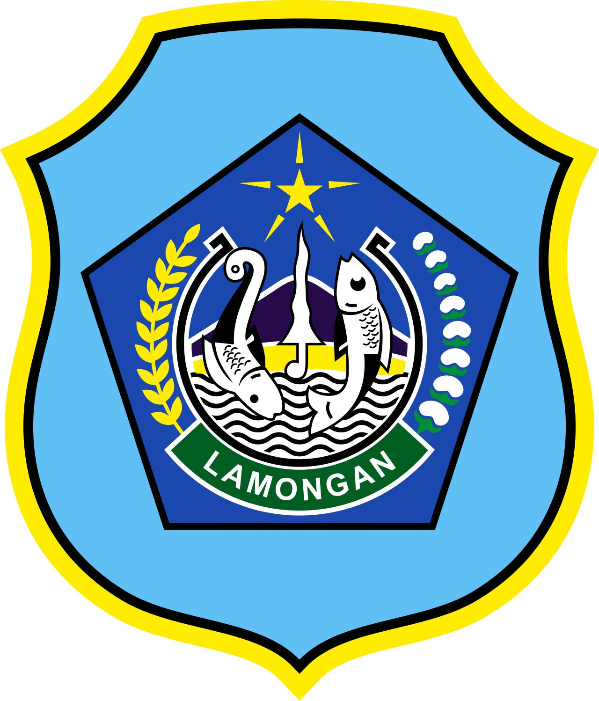
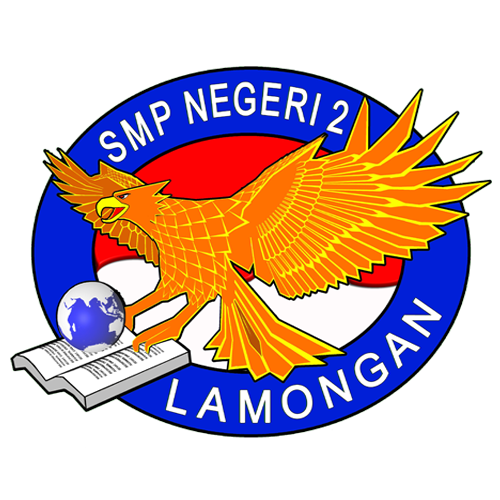
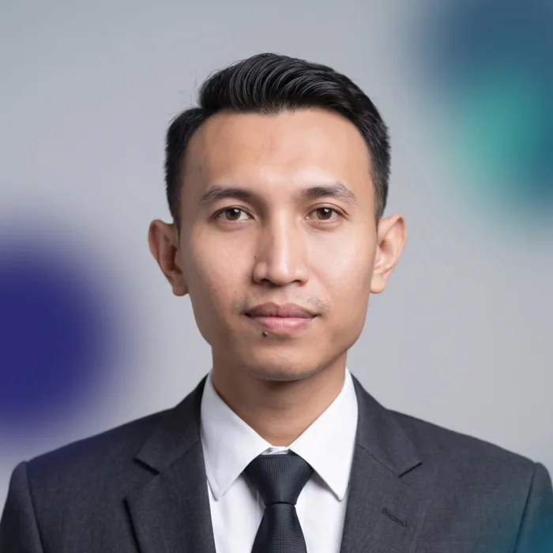
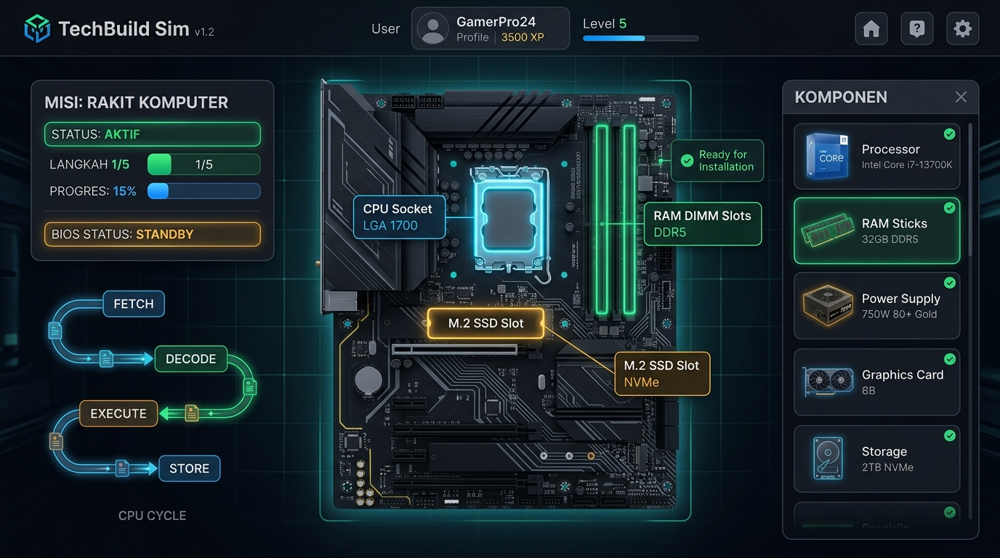
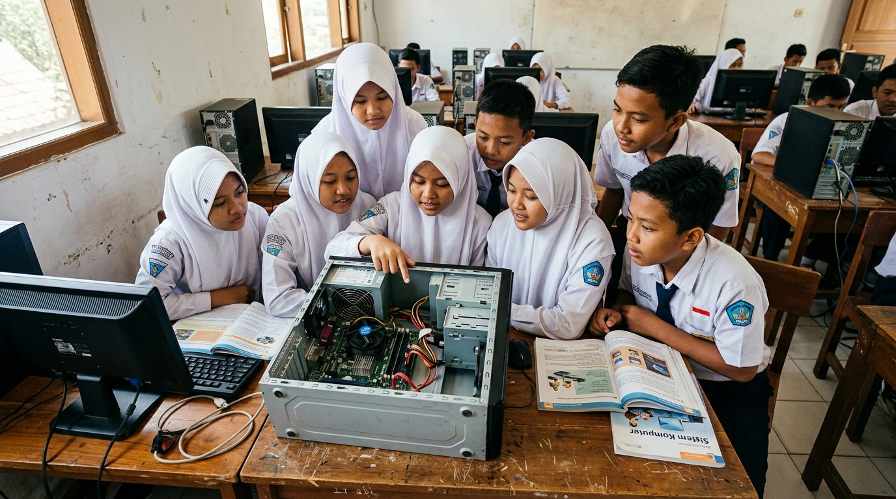
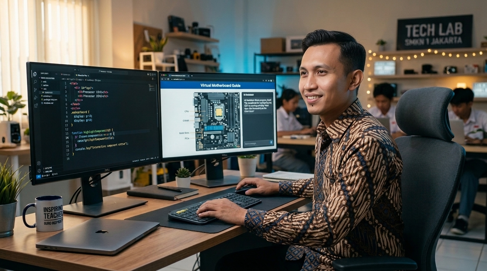
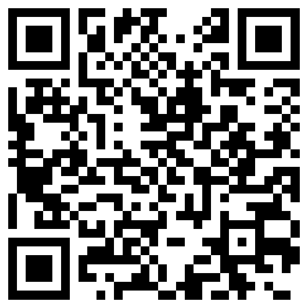

SMP Negeri 2 LamonganApresiasi GTK 2026
SituasiTantanganAksiDampak
Guru SMP Transformatif
Inovasi Pembelajaran
Menyelam ke Dalam Mesin Digital
Media pembelajaran interaktif berbasis web untuk materi Sistem Komputer — Informatika kelas IX.

Ach. Chanifuddin Fanani, S.Pd.
Guru Informatika · SMP Negeri 2 Lamongan, Jawa Timur

Gratis & terbukafanani.my.id/lab
21 halaman interaktifLayar lanskap 16:9
Situasi
Murid fasih menyentuh layar, tapi belum paham mesin di baliknya

Materi abstrak, alat terbatas1 : 35
Hanya satu unit CPU terbuka untuk didemonstrasikan ke 35 murid. Murid takut merusak komponen.
8 kelas
Kesulitan merata di 9A–9H. Siklus CPU & memori tak kasatmata, murid cenderung menghafal istilah.
13 / 35
Murid kelas 9A yang tuntas pada asesmen awal. Rata-rata kelas hanya 58,40.
Tantangan
Empat hal yang harus dijawab
Interaksi presisi & responsif
Komponen terpasang presisi di soket motherboard — lancar di layar sentuh maupun mouse tanpa membebani perangkat.
Pemanfaatan AI yang etis
AI difungsikan sebagai mitra akselerasi guru, bukan pengganti. Seluruh prompt pembuatan aset dicantumkan terbuka.
Keterbacaan di layar kelas (IFP)
Rasio 16:9 yang tajam dan proporsional — teks serta simulasi tetap terbaca jelas dari seluruh sudut kelas maupun komputer lab.
Transformasi pola belajar
Menggeser peran murid dari penerima teori pasif menjadi pembelajar aktif yang berani bereksplorasi dan menalar mandiri.
Aksi · Merancang media
Laboratorium virtual buatan guru sendiri
Web murni, ringan, gratis
HTML, CSS, dan JavaScript — cukup dibuka lewat peramban di panel interaktif, komputer lab, atau gawai murid.
Dikembangkan bersama asisten AI
Kode disusun lewat percakapan dengan AI; tujuan dan alur belajar tetap ditentukan guru.
Analogi dekat dengan murid
Motherboard ibarat ruang kelas, sistem operasi ibarat kepala sekolah.
21halaman
6bagian materi
4misi simulator
4format kuis

Guru merancang, AI membantuAksi · Simulator
Belajar dengan mencoba, tanpa takut merusak
Seret & lepas komponen
Merakit komputer
Bunyi beep BIOS & booting
Sakelar biner
Desimal → biner → huruf
Layar gelap
Cari penyebab & perbaiki
Memori penuh
Pecahkan masalah RAM
Ada komponen pengecoh — RAM DDR2 lawas, adaptor 10 W. Murid harus menalar kecocokan. Salah pasang? Muncul indikator merah dan pesan yang memandu.
Aksi · Di kelas
Guru bergeser dari penceramah menjadi fasilitator
01
Pembuka
Memantik rasa ingin tahu: “Apa yang terjadi di balik layar saat gawai dinyalakan?”
02
Inti
Murid menjelajah media di panel interaktif & komputer lab: membedah motherboard, menonton siklus CPU, menuntaskan misi.
03
Penutup
Kuis empat format dengan skor langsung, diskusi kelas, dan lembar refleksi digital.
Kelas sampel 9A
Diperluas ke 9B–9H
Dibagikan ke rekan pengampu 9I–9J
Demonstrasi langsung
Mari kita coba bersama
fanani.my.id/lab/mpi/sistem-komputer
1Jelajahi materi & video siklus CPU
2Rakit PC hingga terdengar beep BIOS
3Sengaja pasang komponen yang salah
Dampak · Kelas sampel 9A (35 murid)
Pemahaman meningkat, murid berani mencoba
Rata-rata nilai kelas +28,4 poin
Awal
58,40
Akhir
86,80
Murid tuntas (KKTP ≥ 75) 13 → 32 murid
Awal
13 murid
Akhir
32 dari 35 murid
25 / 35
murid membuka kembali simulasi dari rumah secara sukarela.
Cemas → ingin tahu
Murid aktif mencoba dan berdiskusi. Antusiasme serupa terlihat di 9B–9H.
Dampak · Pengimbasan & refleksi
Meluas ke rekan guru, tetap jujur berefleksi
160
guru SMP se-Kabupaten Lamongan
dilatih membuat media interaktif sendiri
dilatih membuat media interaktif sendiri
Narasumber Dinas Pendidikan Kab. Lamongan — Sosialisasi Pembelajaran Mendalam serta Koding & KA, 15 September 2026.
Diimbaskan rutin lewat MGMP Informatika Kabupaten Lamongan.
5 media gratis di fanani.my.id/lab, kode terbuka di GitHub.
Yang masih perlu diperbaiki
3 murid belum tuntas — media bukan solusi tunggal; tetap butuh pendampingan langsung dari guru.
Masih perlu internet saat pertama dibuka.
Rencana tindak lanjut
Versi yang bisa dipakai tanpa internet, serta perluasan ke materi Jaringan Komputer dan Algoritma.
Penutup
Inovasi pembelajaran tidak diukur dari mahalnya perangkat, melainkan dari seberapa dalam ia menyentuh nalar murid.

Terima kasih · Guru Hebat, Indonesia Kuat!
Ach. Chanifuddin Fanani, S.Pd. · chanifuddin@gmail.com · fanani.my.id

Coba sendirifanani.my.id/lab
Menyelam ke Dalam Mesin Digital